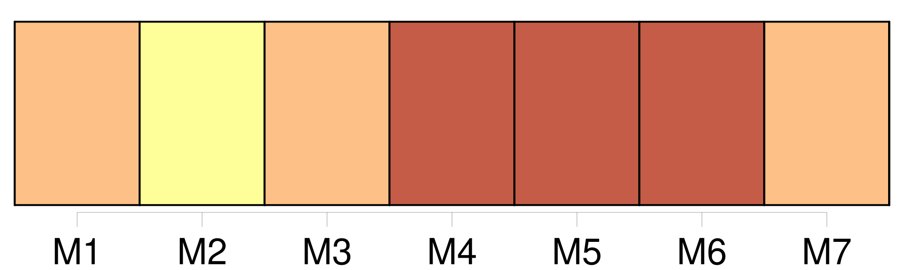
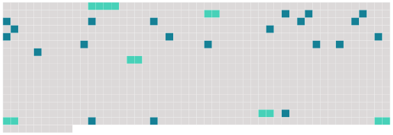

Longueur nb maillons : 27 mentions |
  |
Les condamnations à des peines dont l'effet est de priver [celui qui est condamné] , de toute participation aux droits civils ci-après exprimés, emporteront la mort civile. [5 phrases]
Par la mort civile, [le condamné] perd la propriété de tous les biens qu' [il] possédait ; [sa] succession est ouverte au profit de [ses] héritiers, auxquels [ses] biens sont dévolus, de la même manière que s' [il] était mort naturellement et sans testament.
[Il] ne peut plus ni recueillir aucune succession, ni transmettre, à ce titre, les biens qu' [il] a acquis par la suite.
[Il] ne peut ni disposer de [ses] biens, en tout ou en partie, soit par donation entre-vifs, soit par testament, ni recevoir à ce titre, si ce n'est pour cause d'alimens.
[Il] ne peut être nommé tuteur, ni concourir aux opérations relatives à la tutelle.
[Il] ne peut être témoin dans un acte solennel ou authentique, ni être admis à porter témoignage en justice.
[Il] ne peut procéder en justice, ni en défendant, ni en demandant que sous le nom et par le ministère d'un curateur spécial qui [lui] est nommé par le tribunal où l'action est portée.
[Il] est incapable de contracter un mariage qui produise aucun effet civil.
Le mariage qu' [il] avait contracté précédemment est dissous, quant à tous ses effets civils.
[Son] époux et [ses] héritiers peuvent exercer respectivement les droits et les actions auxquels [sa] mort naturelle donnerait ouverture. [3 phrases]
Les condamnations par contumace n'emporteront la mort civile qu'après les cinq années qui suivront l'exécution du jugement par effigie et pendant, lesquelles [le condamné] peut se représenter. [11 phrases]
En aucun cas la prescription de la peine ne réintégrera [le condamné] dans [ses] droits civils pour l'avenir. [1 phrases]
Les biens acquis par [le condamné] , depuis la mort civile encourue, et dont [il] se trouvera en possession au jour de [sa] mort naturelle appartiendront à la nation par droit de déshérence. Néanmoins le Gouvernement en pourra faire, au profit de la veuve, des enfans ou parens [du condamné] , telles dispositions que l'humanité lui suggérera. |
 |
La ressource peut être téléchargée sur la page Ortolang
Si vous avez des questions ou vous voyez des erreurs, merci d'envoyer un mail à silvia.federzoni89@gmail.com
Site développé par S. Federzoni (contact)